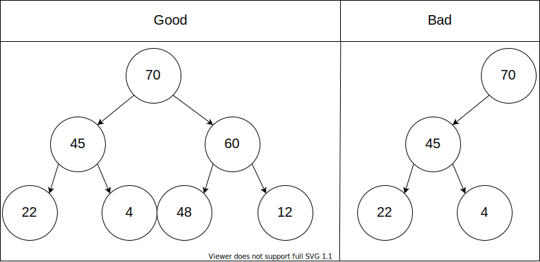
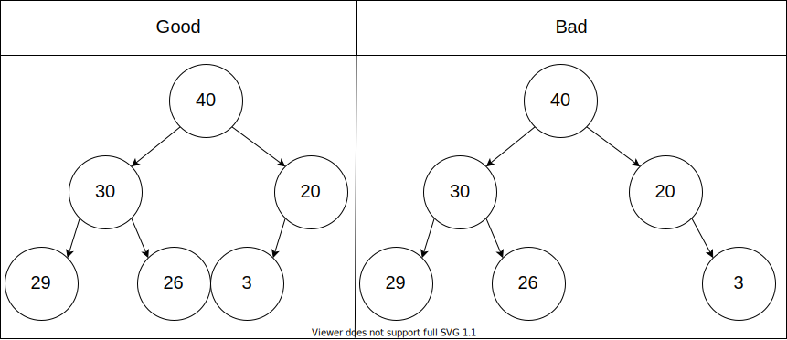
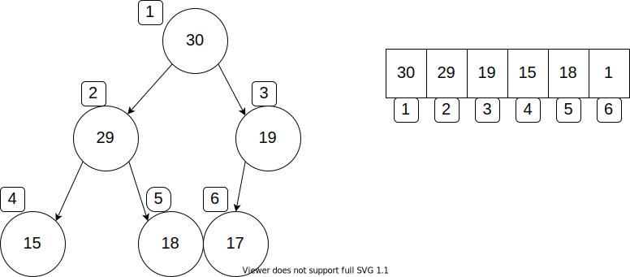
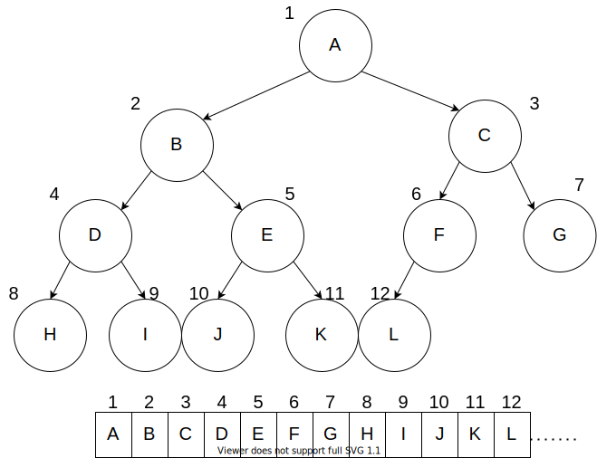
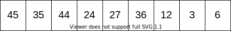
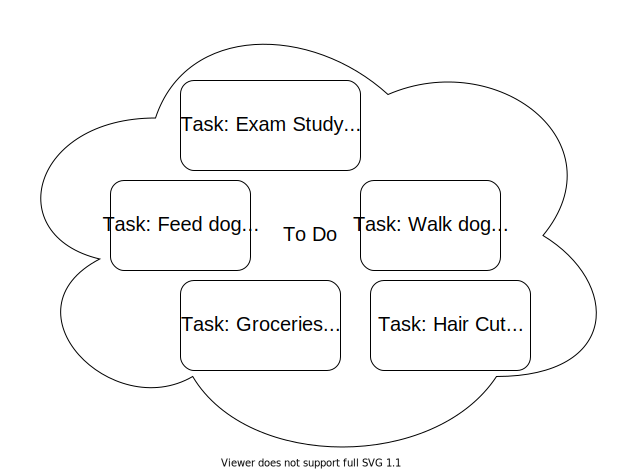
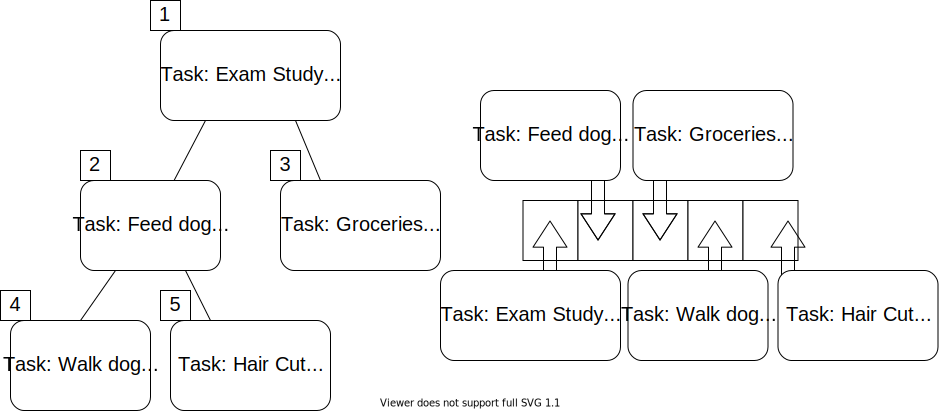
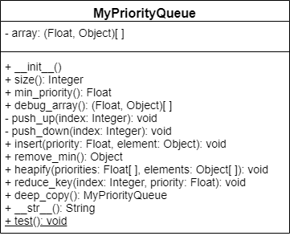
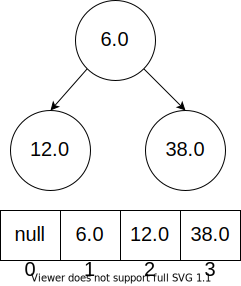
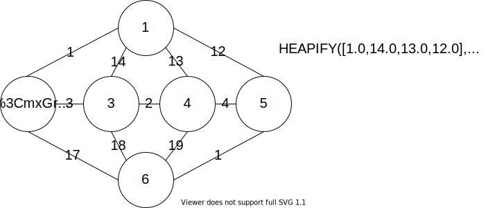

Welcome!
This page is the main page for Heaps and Priority Queues
This page is the main page for Heaps and Priority Queues
The next data structure we will cover is heaps. The heaps discussed in this course are not to be confused with heaps which refer to garbage collection in certain coding languages. Heaps are good for situations were we will need to frequently access and update the highest (or lowest) priority item in a set. For example, heaps are a good data structure to use in Prim’s algorithm. In Prim’s algorithm, we repeatedly got the smallest edge, removed the smallest edge, and then added to and sorted the list of edges.
A heap is an array which we can view as an unsorted binary tree. This tree must have the following properties:
i of the tree, then level i-1 is full. Below we have an example of how this property has been broken. Level two is not full but there are nodes on level three.

As a consequence of the above properties, the following is true as well: Only one node can have one child, all other nodes will have zero or two children. Try to construct a counterexample to see what we mean!
There are two main types of heaps, the max-heap and the min-heap. Depending on the element we want to access we may use one or the other.
A max-heap is a heap such that the parent node is greater than or equal to the children. For example, if we are using a heap to track work flow,we would want to use a max-heap. In this case, the highest priority element will always be the root of the tree.
A min-heap is a heap such that the parent node is less than or equal to the children. This is the opposite of the max-heap. The root of this heap will be the item with the lowest priority. A min-heap may feel unnatural at first, however, this is ideal for greedy algorithms such as Prim’s algorithm. We are frequently getting the smallest edge.
Heaps can be viewed in two forms: as a tree or as an array. We will use the array style in code but we can have the tree structure in the back of our mind to help understand the order of the data. Here is an example of the heap as a tree on the left and the heap as an array on the right.  The root of the heap will always be the first element. Then we can base the numbering of the following nodes from left to right and top to bottom. For example, the left child of the root will be the second entry and the right child will be the third.
For full functionality of our heap, we want to be able to easily determine the parent of a node as well as the children of a node.
Critical Thinking
Using just the array, how can we determine the parent of a node? In the example above, how can we determine the parent of the node with value 18?
We can formulate the relationships between parent and children nodes mathematically. For a node at index i, we can say that the left child of i will be at index 2i and the right child will be at 2i+1. Similarly, we can say that the parent of node i will be at index floor(i/2).
The function floor(x) like in floor(i/2) will round decimal values down to the next whole number. Some examples:
floor(3.2)=3floor(1.9999)=1floor(4)=4
| Node | Parent | Left Child | Right Child |
|---|---|---|---|
i |
floor(i/2) |
2i |
2i + 1 |
| 1 | N/A | 2*1=2 |
2*1+1=3 |
| 2 | floor(2/2)=1 |
2*2=4 |
2*2+1=5 |
| 3 | floor(3/2)=1 |
2*3=6 |
2*3+1=7 |
| 4 | floor(4/2)=2 |
2*4=8 |
2*4+1=9 |
| 5 | floor(5/2)=2 |
2*5=10 |
2*5+1=11 |
| Try it! |
Consider the following example and try to work some out for yourself.

For example, if we ask for the parent of the node with value 27, our answer would be the node with value 35 The node with value 27 has index 5. Thus, the parent of that node will have index floor(5/2)=2. Node 35 is at index two, as such, node 35 is the parent of node 27.
In a heap where n is the size of heap, the elements floor(n/2)+1 through n will always be leaves. If we assume that we have just the 12 elements in this example, then based on this formula, elements 7 through 12 must be leaves. We can verify this in the tree representation!
A natural implementation of heaps is priority queues.
A priority queue is a data structure which contains elements and each element has an associated key value. The key for an element corresponds to its importance. In real world applications, these can be used for prioritizing work tickets, emails, and much more. 
We can use a heap to organize this data for us.

As with heaps, we can have min-priority queues and max-priority queues. For the applications listed above, a max-priority queue is the most intuitive choice. For this course however, we will focus more on min-priority queues which will give us better functionality for greedy algorithms, like Prim’s algorithm.
For the minimum spanning tree algorithms, using a min-priority queue helps the performance of the algorithms. Recall Prim’s algorithm, shown below. Each time we visited a new node, we would add the outgoing edges to the list of available edges, remove the smallest edge, and sort the list.
function PRIM(GRAPH, SRC)
MST = GRAPH without the edges attribute(s)
VISITED = empty set
add SRC to VISITED
AVAILEDGES = list of edges where SRC is the source
sort AVAILEDGES
while VISITED is not all of the nodes
SMLEDGE = smallest edge in AVAILEDGES
SRC = source of SMLEDGE
TAR = target of SMLEDGE
if TAR not in VISITED
add SMLEDGE to MST as undirected edge
add TAR to VISITED
add the edges where TAR is the source to AVAILEDGES
remove SMLEDGE from AVAILEDGES
sort AVAILEDGES
return MST
If we implement Prim’s algorithm with min-priority queue, we don’t have to worry about sorting the edges every time we add or remove one.
function PRIM(GRAPH, SRC)
MST = GRAPH without the edges attribute(s)
VISITED = empty set
add SRC to VISITED
AVAILEDGES = min-PQ of edges where SRC is the source
while VISITED is not all of the nodes
SMLEDGE = smallest edge in AVAILEDGES
SRC = source of SMLEDGE
TAR = target of SMLEDGE
if TAR not in VISITED
add SMLEDGE to MST as undirected edge
add TAR to VISITED
add the edges where TAR is the source to AVAILEDGES
remove SMLEDGE from AVAILEDGES
return MST

The priority queue will have a single attribute which will be the array to represent the priority queue as a heap. Elements of this array will be ordered pairs where the first entry is the priority and the second entry is the node item.
Since arrays start at index zero, we will set the first element equal to a null value and the element at index 1 will be the start of our priority queue. 
Similar to graphs, heaps will have a size which will be the number of elements currently in our heap.
The PUSHDOWN and PUSHUP functions will help us to maintain the heap structure. In their own ways, described below, they will correct the ordering of nodes. Primarily making it such that the parent is always smaller then its children. Both of these will be recursive functions.
PUSHUP: This function takes an index as input and then determines if the element at that index has a lower priority than its parent. This will ‘raise’ the element up through heap and move it closer to the front of the array.
PUSHUP. The first is if the element has greater priority than its parent, then we do nothing as the structure is correct. The second is if the index of the parent node is 0, then we do nothing as we have reached the root of the heap.PUSHUP function with the parent index as input.PUSHDOWN: Similar to PUSHUP this function will take an index as input but will now determine if the node has higher priority than one of its children. This will ’trickle’ the element down through the heap and move it closer to the end of the array.
PUSHDOWN. The first is if the the parent has lower priority than both of its children, then we do nothing as the structure is correct. The second is if the index of both children are out of the range of our array, then we do nothing as we have reached a leaf.This will remove the lowest priority element from our priority queue. If our priority queue only has one element, then we will just remove the element. However, if there is more than the single element, we will need to do some maintenance to make sure the lowest priority element is the root again. To do this, we will take the last element of the priority queue and make it the root. Then we will use the PUSHDOWN function to reorder the nodes.
The HEAPIFY function will allow us to translate our data into a heap. It will take as input a list of priorities and a list of items. Suppose in the figure below, we are calling Prim’s function from node 1. Thus, we want to start our heap with the outgoing edges of node 1. We will input the list of priorities, which in this case are the edge weights, and the list of the items. For this application, we have made the items ordered pairs where the first entry is the source node and the second is the target.

Since we are working primarily with min-priority queues, we will define HEAPIFY in those terms. Though, we could have an equivalent function for a max-priority queue.
For input, the function takes RANKS which is the array representation of our priority values and ITEMS which is the array representation of the items.
function HEAPIFY(RANKS, ITEMS)
if RANKS and ITEMS are the same size
SIZE = length of ITEMS
loop INDEX starting at 1 to SIZE
I_RANK = value at INDEX in RANKS
I_ITEM = item at INDEX of ITEMS
append (I_RANK, I_ITEM) to priority queues array
QSIZE = length of our PQ - 1
LASTPARENT = floor(QSIZE/2) + 1
loop NODE starting at LASTPARENT down to 1
PUSHDOWN(NODE)
else
error
The INSERT function is similar to HEAPIFY but now we are just wanting to insert a single element. As such, INSERT will take the priority of the element and the element as input. We will append the ordered pair of (priority, element) to our priority queue array and then call the PUSHUP function on the last element of the array.
The DECREASEKEY function allows us to update the priority of an element. It takes as input the array index for heap entry to update as well as the priority we will be giving the element. We first check if that the new priority is in fact less than the original. Then we update the priority and then push the element up.
DECREASEKEY(IDX, PRIORITY)
ELEMENT = entry in array at IDX
if PRIORITY > ELEMENT[0]
error
ELEMENT[0] = PRIORITY
PUSHUP(IDX)
A good application of priority queues is finding the shortest path in a graph. A common algorithm for this is Dijkstra’s algorithm.
Edsger Dijkstra was a Dutch computer scientist who researched many fields. He is credited for his work in physics, programming, software engineering, and as a systems scientist. His motivation for this algorithm in particular was to be able to find the shortest path between two cities.
“What is the shortest way to travel from Rotterdam to Groningen, in general: from given city to given city? It is the algorithm for the shortest path, which I designed in about twenty minutes. One morning I was shopping in Amsterdam with my young fiancée, and tired, we sat down on the café terrace to drink a cup of coffee and I was just thinking about whether I could do this, and I then designed the algorithm for the shortest path.” - Edsger Dijkstra, Communications of the ACM 53 (8), 2001.
His original algorithm was defined for a path between two specific cities. Since its publication, modifications have been made to the algorithm to find the shortest path to every node given a source node.
DIJKSTRAS(GRAPH, SRC)
SIZE = size of GRAPH
DISTS = array with length equal to SIZE
PREVIOUS = array with length equal to SIZE
set all of the entries in PREVIOUS to none
set all of the entries in DISTS to infinity
DISTS[SRC] = 0
PQ = min-priority queue
loop IDX starting at 0 up to SIZE
insert (DISTS[IDX],IDX) into PQ
while PQ is not empty
MIN = REMOVE-MIN from PQ
for NODE in neighbors of MIN
WEIGHT = graph weight between MIN and NODE
CALC = DISTS[MIN] + WEIGHT
if CALC < DISTS[NODE]
DISTS[NODE] = CALC
PREVIOUS[NODE] = MIN
PQIDX = index of NODE in PQ
PQ decrease-key (PQIDX, CALC)
return DISTS and PREVIOUS
 ^[Shiyu Ji, CC BY-SA 4.0
https://creativecommons.org/licenses/by-sa/4.0, via Wikimedia Commons, https://upload.wikimedia.org/wikipedia/commons/e/e4/DijkstraDemo.gif]
^[Shiyu Ji, CC BY-SA 4.0
https://creativecommons.org/licenses/by-sa/4.0, via Wikimedia Commons, https://upload.wikimedia.org/wikipedia/commons/e/e4/DijkstraDemo.gif]
Aside from just finding routes for us to travel, Dijkstra’s algorithm can accommodate for any application that can have an abstraction to finding the shortest path. For example, the following animation shows how a robot could utilize Dijkstra’s algorithm to find the shortest path with an obstacle in the way. In this example, each node could represent one square foot of floor space and the edges would represent those spaces that are adjacent. In this scenario, we would most likely not have an associated edge weight. If the robot were traversing on a rugged terrain, then we could have the weights represent the difficultly of passing through the terrain from one space to the other.
 ^[Subh83, CC BY 3.0
https://creativecommons.org/licenses/by/3.0, via Wikimedia Commons, https://commons.wikimedia.org/wiki/File:Dijkstras_progress_animation.gif]
^[Subh83, CC BY 3.0
https://creativecommons.org/licenses/by/3.0, via Wikimedia Commons, https://commons.wikimedia.org/wiki/File:Dijkstras_progress_animation.gif]
Another practical abstraction is in network routing. In this simplified abstraction, nodes would be routers or switches and the edges would be the physical links between them. The edge weights in this case would be the cost of sending a packet from one router to the next. Dijkstra’s algorithm is actively used in protocols such as Intermediate System to Intermediate System (IS-IS) and Open Shortest Path First (OSPF).